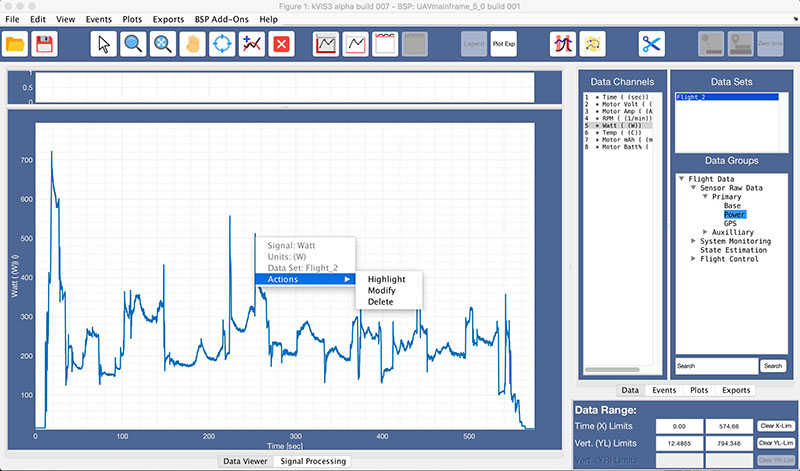

This is the main view to load, save, edit and inspect data.
The left side of the top button row (Ribbon) is common to all tabs, the right side is specific to each tab.

Function: Show/hide legend (right click on legend allows to change its formatting)
Function: Export main axes to new figure (for saving/printing)
Export all axes? Or even print to pdf directly?
Function: Show overlay with event locations in main axes
Function: Show google map with data overlay in the main axes. Data from the overlay can be selected from any data channel.
This function requires a valid Google Maps API key in the BSP, since the maps cannot be downloaded otherwise.
Function: Applies a cut at the defined X-limits. This will edit the
content of the entire data set: - All data channels will
be cut to new time limits - FDS attributes are updated to
reflect the change - Data Range is reset to limits of new
data range
The edit is performed IN MEMORY only. The user has to manually
save the new FDS to conserve the edit.
Function: Defines currently selected data set as the time reference. Other data sets can then be aligned to the reference by specifying time offsets.
Implementation:
Function: Define a time offset relative to the previously defined master data set. Plots of this offset dataset will be moved in time to reflect the offset.
Implementation: Write specified time offset
value into the Offset attribute of the FDS
structure. Indicate offset value in Data Sets list in
front of the name.
Each plot line has its own context menu, allowing to edit/delete the line and showing information about data origin.
Function: Specify X-axis range for all plots - Enter values directly into the input fields. Enter updates plot(s). Use Zoom/Pan function to select limits interactively, and Clear X-Lim to reset limits to global range. The selected time range can be used during custom plot/export operations.
Function: Specify Y-axis range for left and right axis (independently) - Enter values directly into the input fields. Enter updates plot(s). Use Zoom/Pan function to select limits interactively, and Clear YL/YR-Lim to reset limits to global range.